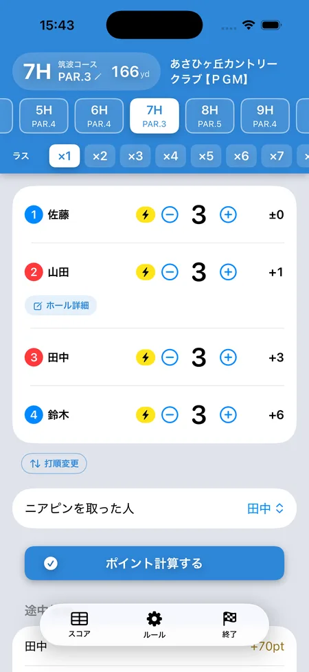

ゴルフ「ドラコン・ニアピン」のルール
SQORE編集部 ｜ 2026年10月5日更新
ドラコン（ドライビングコンテスト）はPAR5で最も遠くへ飛ばした人、ニアピンはPAR3でワンオンしてピンに最も近づけた人がポイントを獲得する名物ルールです。コンペの定番ですが、仲間内のラウンドでも他のゲームに追加するだけで一気に盛り上がります。
| ドラコン | ニアピン | |
|---|---|---|
| 対象ホール | PAR5 | PAR3 |
| 取れる条件 | ティーショットがフェアウェイに残っていること | ティーショットがグリーンに乗っていること（ワンオン） |
| 勝つのは | 条件を満たした中で最も飛んだ人 | ワンオンした中で最もピンに近い人 |
| 誰も取れなかったら | 次のPAR5へキャリー | 次のPAR3へキャリー |
ドラコンの基本ルール
- 対象はPAR5（全PAR5でやるのが一般的。PAR4や指定ホールでやる会もあります）。
- ティーショットがフェアウェイに残っていることが条件。
- 条件を満たした中で最も遠くへ飛ばした人がポイント獲得（例: 10pt）。
- 全員フェアウェイを外したら、次のPAR5へキャリー（持ち越し）が定番です。
ニアピンの基本ルール
- 対象はPAR3（全PAR3でやるのが一般的）。
- ティーショットでグリーンに乗っていること（ワンオン）が条件。
- ワンオンした中で最もピンに近い人がポイント獲得（例: 10pt）。
- 誰もワンオンしなければ次のPAR3へキャリー。18Hの最終PAR3まで誰も取れなければ消滅、などの運用もあります。
「ホールインワンはニアピン？」で揉めたら
ニアピンにはゴルフ規則の定めがないため、ホールインワンの扱い・カラーに止まった球・OB後の打ち直しなどは取り決め次第です。よく揉めるポイントと決めておくことはニアピンとは（意味と、どこまでが対象か）にまとめました。
SQOREでの扱い
アプリのSQOREは、取った人を選ぶ方式です。キャリーの持ち越しとチームへの加算は自動、ニアピンはPAR3のホールでだけ、ドラコンはPAR5のホールでだけ選べるようになっています。
PAR4でドラコンをやる会の分は、アプリでは付けられません。「フェアウェイに残っていること」もアプリは判定しないので、条件を満たしたかは現場で判断して選んでください。
チーム戦との組み合わせ
ラスベガスなどのチーム戦と同時にやる場合は、ドラコン・ニアピンのポイントを個人ではなくチームに加算する方式もあります。ワンオン合戦がそのままチームの勝敗に絡むので、PAR3の緊張感が倍増します。
アプリなら取った人をタップするだけ
キャリーの持ち越しも勝手に数える
iPhone・AndroidアプリのSQOREなら、そのホールでドラコン・ニアピンを取った人を選ぶだけ。誰も取れなければ次のドラコンホール・ニアピンホールへ自動でキャリーし、何ホール分が乗っているかも表示されます。

よくある質問
ドラコンはどのホールでやる？
PAR5の全ホールでやるのが一般的です（PAR4や指定ホールでやる会もあります）。フェアウェイに残っていることを条件にし、最も遠くへ飛ばした人がポイントを獲得します。誰も条件を満たさなければ次のPAR5へキャリーするのが定番です。SQOREではPAR5のホールで選べます。
ニアピンのルールは？
PAR3で、ティーショットをグリーンに乗せた人の中で最もピンに近い人がポイントを獲得します。ワンオンが条件なので、誰も乗らなければ次のPAR3へキャリーします。
ドラコンの「フェアウェイ限定」は必須？
必須ではありませんが、入れるのが一般的です。ラフやバンカーでも良しとすると単純な飛ばし合いになるので、仲間内で事前に決めておきましょう。
ポイントはいくつが目安？
メインのゲームより小さめ（例: 1本10pt）に設定して、スパイスとして楽しむのが定番です。
最後まで誰も取れなかったキャリーはどうする？
最終のPAR5・PAR3まで持ち越して誰も取れなかった場合は、そのまま消滅とするのが一番シンプルです。溜まったぶんを最終ホールのベストスコアの人に渡す、という運用もあります。ニアピンなら、2打目でピンに一番寄せた人に渡す「セカンドニアピン」という方法もあります（ニアピンとは）。スタート前に決めておいてください。
ニアピンを取った人が3パットしたら？
そのままポイント獲得とするのが基本です。オリンピックと組み合わせる仲間内では、3パットなら無効とする「3パット失格」を入れることもあります。コンペのニアピン賞では普通は関係ありません。
ドラコンもニアピンも、タップするだけ
SQOREはドラコン・ニアピン・ラスベガス・オリンピックなどのポイントを自動計算する無料アプリです。
ゲームをしない日はスコアアプリとしてそのまま使えます。いま打つホールの自分の平均スコアやOB率も出ます。